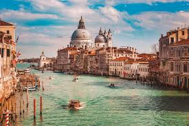
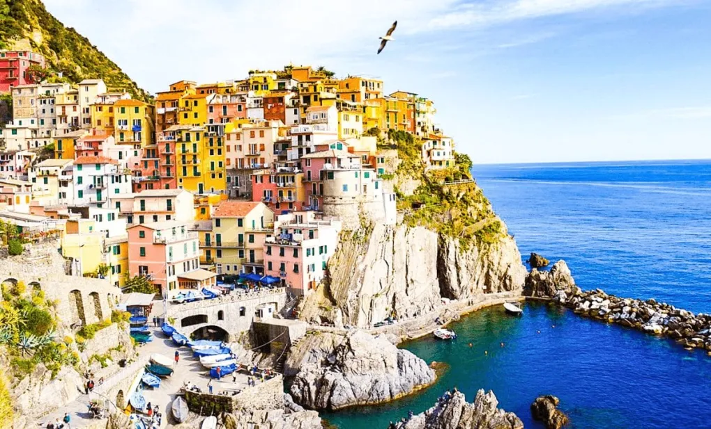
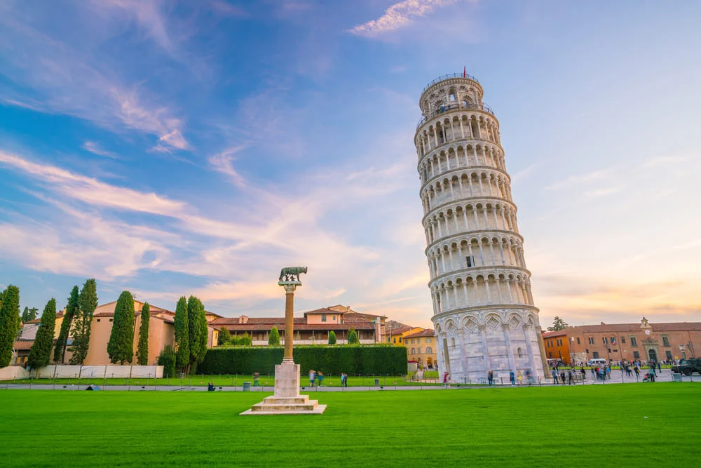

Itália
Galeria



Sobre
A Cultura da Itália é famosa pela sua arte e pelos seus monumentos, entre os quais se encontram a Torre de Pisa, o Coliseu de Roma, bem como pela sua comida (pizza, pasta, etc.), vinho, estilo de vida, elegância, design, cinema, teatro, literatura, poesia, artes plásticas, música (especialmente a Ópera), e, de uma forma geral, por aquilo que é considerado por muita gente "bom gosto".
Itália é considerada o berço da civilização ocidental e uma superpotência cultural. A Itália tem sido o ponto de partida de fenómenos de impacto internacional como a Magna Graecia, o Império Romano, a Igreja Católica Romana, o Renascimento, o Risorgimento e a integração europeia. Durante sua história, a nação deu à luz um número enorme de pessoas notáveis.
Viagens em Destaque
-
Australia
-
França